항공산업기사 (2012-09-15 기출문제)
1과목: 항공역학
1. 공기 중에서 음파의 전파 속도를 나타낸 식으로 틀린 것은? (단, p : 압력, ρ : 밀도, R : 기체상수, T : 온도, k : 공기의비열비이다.)
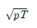
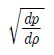
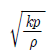
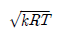
(정답률: 49%)

2. 다음 중 정적으로 안정된 항공기에 해당하는 것은? (단, CM : 피칭 모멘트 계수, α : 받음각이다. )
- CM 이 α 에 대한 기울기가 + 값일 경우
- CM 이 α 에 대한 기울기가 - 값일 경우
- CM 이 α 에 대한 기울기가 0 값일 경우
- CM 이 α 에 대한 기울기가 1 값일 경우
(정답률: 53%)
3. 4자 계열 날개골 NACA 2315 는 최대캠버가 앞전에서부터 시위길이의 몇 % 정도에 위치한 날개골인가?
- 10
- 20
- 30
- 40
(정답률: 76%)
4. 성층권 아래층의 기온은 높이에 관계없이 대체로 일정하지만 위층에서는 높아지는데 그 이유로 옳은 것은?
- 구름이 없기 때문
- 대기에 불순물이 있기 때문
- 밀도가 높고 질소의 양이 많기 때문
- 오존층이 있어 자외선을 흡수하기 때문
(정답률: 88%)
5. 항공기의 항속거리가 3600km 이고, 항속시간이 2시간이며, 비행 중 연료소비량이 400kgf 이라면, 이항공기의 비항속거리(Specific range)는 몇 m/kgf 인가?(오류 신고가 접수된 문제입니다. 반드시 정답과 해설을 확인하시기 바랍니다.)
- 900
- 1200
- 1800
- 1600
(정답률: 43%)
6. 중량이 일정한 항공기가 등속도 수평 비행을 할 경우 항공기의 추력과 양항비(Lift-drag range)와의 관계를 가장 옳게 설명한 것은?
- 추력은 양항비에 비례한다.
- 추력은 양항비에 반비례한다.
- 추력은 양항비의 제곱에 비례한다.
- 추력은 양항비의 제곱에 반비례한다.
(정답률: 64%)
7. 프로펠러에 작용하는 토크(torque)의 크기를 옳게 나타낸 것은? (단, ρ:공기밀도,n:프로펠러회전수,C:토크계수,D:프로펠러의지름이다.)
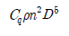
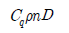
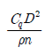
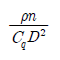
(정답률: 87%)
8. 비행 중 저피치와 고피치 사이의 무한한 피치를 선택할 수 있어 비행속도나 기관출력의 변화에 관계없이 프로펠러의 회전속도를 항상 일정하게 유지하여 가장 좋은 효율을 유지하는 프로펠러의 종류는?
- 고정피치 프로펠러
- 정속 프로펠러
- 조정피치 프로펠러
- 2단 가변피치 프로펠러
(정답률: 81%)
9. 비행기의 조종간에 걸리는 힘을 작게 하기 위해서 힌지 모멘트를 조절하기 위한 장치로 가장 부적합한 것은?
- 스포일러(Spoiler)
- 서보 탭(Servo tab)
- 혼 밸런스(Horn balance)
- 앞전 밸런스(Leading edge balance)
(정답률: 72%)
10. 헬리콥터 전진비행성능에 가장 영향을 적게 주는 요소는?
- 밀도고도
- 바람의 속도
- 지면효과
- 헬리콥터의 총 중량
(정답률: 80%)
11. 전진 비행하는 헬리콥터의 주회전날개에서 플래핑운동에 대한 설명으로 틀린 것은?
- 전진 블레이드와 후진 블레이드의 받음각을 변화 시킨다.
- 전진 블레이드와 후진 블레이드의 상대속도 차이에 의해 양력차이가 발생한다.
- 전진 블레이드와 후진 블레이드의 양력차이를 해소한다.
- 전진 블레이드와 후진 블레이드의 회전수 차에 의해 발생한다.
(정답률: 57%)
12. 공기가 아음속으로 관내를 흐를 때 관의 단면적이 점차로 증가 한다면 이때 전압(Total pressure)은?
- 일정하다.
- 점차 증가한다.
- 감소하다가 증가한다.
- 점차 감소한다.
(정답률: 60%)
13. 비행기가 230km/h 로 수평비행 할 때 비행기의 상승률이 10m/s 라고 하면, 이 비행기 상승각은 약 몇 °인가?
- 4.8
- 7.2
- 9.0
- 12.0
(정답률: 54%)
14. 다음 중 수평선회에 대한 설명으로 틀린 것은?
- 선회반경은 속도가 클수록 커진다.
- 경사각이 크면 선회반경은 작아진다.
- 경사각이 클수록 하중배수는 커진다.
- 선회시 실속속도는 수평비행 실속속도보다 작다.
(정답률: 63%)
15. 수직 꼬리날개가 실속하는 큰 옆미끄럼각에서도 방향 안정성을 유지하기 위하여 사용되는 장치는?
- 플랩(flap)
- 도살핀(dosal pin)
- 러더(rudder)
- 스포일러(spoiler)
(정답률: 92%)
16. 날개의 면적을 유지하면서 가로세로비만 4배로 증가시켰을 때 이 비행기의 유도항력계수는 어떻게 되는가?
- 4배 증가한다.
- 1/2 로 감소한다.
- 1/4 로 감소한다.
- 1/16 로 감소한다.
(정답률: 79%)
17. 다음 중 이륙 시 활주거리를 줄일 수 있는 조건으로 틀린 것은?
- 추력을 최대로 한다.
- 날개하중을 작게 한다.
- 고양력 장치를 사용한다.
- 고도가 높은 비행장에서 이륙한다.
(정답률: 83%)
18. 원통의 회전에 의해 생긴 순환이 선형흐름과 조합될 경우 양력이 발생하게 되는데 이러한 효과를 무엇이라 하는가?
- 마그너스 효과
- 마찰 효과
- 실속 효과
- 점성 효과
(정답률: 84%)
19. 공기 유동이 날개의 표면을 따라 흐르다가 날개의 표면에서 떨어지는 것을 무엇이라 하는가?
- 천이(Transition)
- 박리(Separation)
- 난류(Turbulent)
- 간섭(Interference)
(정답률: 89%)
20. 받음각이 실속각보다 클 경우에 날개에 가벼운 옆놀이 운동이나 교란을 주면 날개는 회전을 시작하고 회전은 점점 빨라져서 일정 회전수로 회전을 하게 되는데 고정익 항공기에서는 스핀이라고도 하는 현상은?
- 자전 현상
- 공전 현상
- 실속 현상
- 키놀이 현상
(정답률: 74%)
2과목: 항공기관
21. 다음 중 추진체에 의해 발생되는 주된 최종 기체가 아닌 것은?
- 램제트기관
- 터보프롭기관
- 터보팬기관
- 터보제트기관
(정답률: 55%)
22. 가스터빈기관에서 가변정익(Variable stator vane)을 장착하는 가장 큰 이유는 언제 발생하는 실속을 방지하기 위해서인가?
- 저속에서 가속과 감속시
- 순항에서 가속과 감속시
- 고속에서 가속과 감속시
- 급강하에서 가속과 감속시
(정답률: 58%)
23. 항공기 가스터빈기관의 연료로서 필요한 조건이 아닌 것은?
- 발열량이 클 것
- 휘발성이 낮을 것
- 부식성이 없을 것
- 저온에서 동결되지 않을 것
(정답률: 76%)
24. 완전가스의 열역학적인 상태변화에 속하지 않는 것은?
- 등온변화
- 가용변화
- 정압변화
- 폴리트로픽변화
(정답률: 55%)
25. 프로펠러의 특정 부분을 나타내는 명칭이 아닌 것은?
- 허브(Hub)
- 네크(Neck)
- 블레이드(Blade)
- 로터(Rotor)
(정답률: 72%)
26. 항공용 직접연료분사(Direct fuel injection)식 왕복기관에서 연료가 분사되는 부분이 아닌 것은?
- 흡입 매니폴드
- 흡입밸브
- 벤튜리 목부분
- 실린더의 연소실
(정답률: 63%)
27. 왕복기관의 흡입 및 배기밸브가 실제로 열리고 닫히는 시기로 가장 옳은 것은?
- 흡입밸브 : 열림/상사점, 닫힘/하사점
배기밸브 : 열림/하사점, 닫힘/상사점 - 흡입밸브 : 열림/상사점 전, 닫힘/하사점 전
배기밸브 : 열림/하사점 후, 닫힘/상사점 후 - 흡입밸브 : 열림/상사점 전, 닫힘/하사점 전
배기밸브 : 열림/하사점 전, 닫힘/하사점 후 - 흡입밸브 : 열림/상사점 전, 닫힘/하사점 후
배기밸브 : 열림/하사점 전, 닫힘/상사점 후
(정답률: 75%)
28. 가스터빈기관의 공기흐름 중에서 압력이 가장 높은 곳은?
- 압축기
- 터빈노즐
- 디퓨저
- 터빈로터
(정답률: 65%)
29. 다음 중 가스터빈기관의 압축기 블레이드 오염(Dirty)으로 발생되는 현상은?
- Low R.P.M
- High R.P.M
- Low E.G.T
- High E.G.T
(정답률: 64%)
30. 가스터빈기관의 시동기(Starter)는 일반적으로 어느 곳에 장착되는가?
- 보기기어박스
- 타코미터
- 연료 조절장치
- 블리드 패드
(정답률: 77%)
31. 그림과 같이 압력(P)-부피(V)선도 상의 오토 사이클 (Otto cycle)에서 과정 1 → 2, 3 → 4 는 어떤 변화인가?
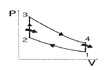
- 등온 압축, 등온 팽창
- 단열 압축, 등온 팽창
- 등온 압축, 단열 팽창
- 단열 압축, 단열 팽창
(정답률: 69%)
32. 기관오일계통의 부품 중 베어링부의 이상 유무와 이상 발생 장소를 탐지하는데 이용되는 부품은?
- 오일 필터
- 마그네틱 칩 디텍터
- 오일압력 조절밸브
- 오일필터 막힘 경고등
(정답률: 79%)
33. 가스터빈기관 연소실의 2차 공기에 대한 설명으로 옳은 것은?
- 14 ~ 18 : 1 의 최적 혼합비를 유지한다.
- 스웰가이드베인이 있어 강한선회를 주어 적당한 난류를 발생시킨다.
- 2차 공기는 연소실로 유입되는 전체공기의 약25% 정도이다.
- 흡입된 공기로 연소가스를 희석하여 연소실 출구 온도를 낮춘다.
(정답률: 50%)
34. 9개 실린더를 갖고 있는 성형기관(Radialengine)의 마그네토 배전기(Distributor) 6번 전극에 꽂혀있는 점화 케이블은 몇 번 실린더에 연결시켜야 하는가?
- 2
- 4
- 6
- 8
(정답률: 68%)
35. 왕복기관의 작동 중 점검하여야 할 사항과 가장 관계가 먼 것은?
- 흡기압력
- 공기 블리드
- 배기가스온도
- 엔진오일의 압력
(정답률: 60%)
36. 다음 중 윤활유의 점도를 나타내는 것은?
- MIL
- SAE
- SUS
- NAS
(정답률: 63%)
37. 가스터빈기관의 저속 비행시 추진효율이 좋은 순서대로 나열된 것은?
- 터보팬 ＞ 터보프롭 ＞ 터보제트
- 터보프롭 ＞ 터보제트 ＞ 토보팬
- 터보프롭 ＞ 터보팬 ＞ 터보제트
- 터보제트 ＞ 터보팬 ＞ 터보프롭
(정답률: 74%)
38. 프로펠러 깃각(Blade angle)은 에어포일 시위선(Chord line)과 무엇과의 사이각으로 정의 되는가?
- 회전면
- 프로펠러 추력 라인
- 상대풍
- 피치변화시 깃 회전 축
(정답률: 65%)
39. 항공용 왕복기관의 기본 성능요소에 관한 설명으로 틀린 것은?
- 총 배기량은 기관이 2회전 하는 동안 1개의 실린더 에서 배출한 배기가스의 양이다.
- 기관의 총 배기량이 증가하면 기관의 최대 출력이 증가한다.
- 열에너지로부터 기계적 에너지로 변환되는 전체마력을 지시마력(Indicated horse power)이라 한다.
- 구동장치나 프로펠러에 전달되는 실직적인 마력을 축마력(Shaft horse power)이라 한다.
(정답률: 59%)
40. 왕복기관에서 흡기압력이 증가할 때 나타나는 효과는?
- 충진 체적이 증가한다.
- 충진 체적이 감소한다.
- 충진 밀도가 증가한다.
- 연료, 공기 혼합기의 무게가 감소한다.
(정답률: 52%)
3과목: 항공기체
41. 항공기 기체 구조의 리깅(Rigging)작업 시 구조의 얼라인먼트(Alignment) 점검 사항이 아닌 것은?
- 날개 상반각
- 날개 취부각
- 수평 안정판 상반각
- 항공기 파일론 장착면적
(정답률: 72%)
42. 민간 항공기에서 주로 사용하는 Integral fueltank의 가장 큰 장점은?
- 연료의 누설이 없다.
- 화재의 위험이 없다.
- 연료의 공급이 쉽다.
- 무게를 감소시킬 수 있다.
(정답률: 81%)
43. 그림과 같이 날개에서 C.G(Center of gravity)는 MAC(Mean aerodynamic chord)의 백분율로 몇 % 인가?
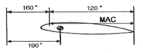
- 15
- 20
- 25
- 30
(정답률: 77%)
44. 리벳 작업시 리벳성형머리 폭을 리벳 지름(D)으로 옳게 나타낸 것은?
- 1D
- 1.5D
- 3D
- 5D
(정답률: 83%)
45. 항공기의 외피 수리에서 다음의 [조건]에 의하면 알루미늄 판재의 굽힘 허용값은 약 몇 inch 인가?
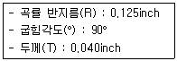
- 0.206
- 0.228
- 0.342
- 0.456
(정답률: 70%)
46. 락크 볼트(Lock bolt)에 대한 설명으로 틀린 것은?
- 장착하는데 판의 표면을 풀림 처리한 것이다.
- 고강도 볼트와 리벳의 특징을 결합한 것이다.
- 락크 와셔, 코터핀으로 안전 장치를 해야 한다.
- 일반 볼트나 리벳보다 쉽고 신속하게 장착할 수 있다.
(정답률: 60%)
47. 알크래드(Alclade)에 대한 설명으로 옳은 것은?
- 알루미늄 판의 표면을 풀림 처리한 것이다.
- 알루미늄 판의 표면을 변형경화 처리한 것이다.
- 알루미늄 판의 양면에 순수 알루미늄을 입힌 것이다.
- 알루미늄 판의 양면에 아연 크로메이트 처리한 것이다.
(정답률: 83%)
48. 항공기 재료에 사용되는 다음 금속 중 비중이 제일 큰 것은?
- 티타늄
- 크롬
- 알루미늄
- 니켈
(정답률: 45%)
49. 항공기 조종장치의 구성품에 대한 설명으로 틀린것은?
- 풀리는 케이블의 방향을 바꿀 때 사용되며, 풀리의 베어링은 원활한 회전을 위해 주기적으로 윤활해 주어야 한다.
- 압력시일은 케이블이 압력 벌크헤드를 통과하는 곳에 사용되며, 케이블의 움직임을 방해하지 않을 정도의 기밀이 요구된다.
- 페어리드는 케이블이 벌크헤드의 구멍이나 다른 금속이 지나는 곳에 사용되며, 페놀수지 또는 부드러운 금속 재료를 사용한다.
- 턴버클은 케이블의 장력조절에 시용되며, 턴버클 배럴은 케이블의 꼬임을 방지하기 위해 한쪽에는 왼나사, 다른 쪽에는 오른나사로 되어 있다.
(정답률: 50%)
50. 그림과 같이 보에 집중하중이 가해질 때 하중 중심의 위치는?
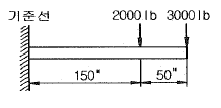
- 기준선에서부터 150“
- 기준선에서부터 180“
- 보의 우측끝에서부터 150“
- 보의 우특끝에서부터 180“
(정답률: 70%)
51. 다음 중 항공기의 유효하중을 옳게 설명한 것은?
- 항공기의 무게 중심이다.
- 항공기에 인가된 최대무게이다.
- 총무게에서 자기무게를 뺀 무게이다.
- 항공기내의 고정위치에 실제로 장착되어 있는 무게이다.
(정답률: 80%)
52. 그림과 같은 V-n 선도에서 AD 선은 무엇을 나타내는 것인가?
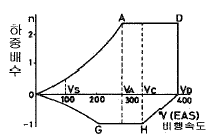
- 최소제한하중배수
- 최대제한하중배수
- “-” 방향에서 얻어지는 하중배수
- “+” 방향에서 얻어지는 하중배수
(정답률: 84%)
53. 항공기와 관련하여 하중과 응력에 대한 설명으로 틀린 것은?
- 구조물에 가해지는 힘을 하중이라 한다.
- 면적당 작용하는 내력의 크기를 응력이라 한다.
- 하중에는 탑재물의 중량, 공기력, 관성력, 지면반력, 충격력 등이 있다.
- 구조물인 항공기는 하중을 지지하기 위한 외력으로 응력을 가진다.
(정답률: 61%)
54. 볼트의 부품번호가 AN 3 DD 5 A 인 경우 DD에 대한 설명으로 옳은 것은?
- 볼트의 재질을 의미한다.
- 나사 끝에 두 개의 구멍이 있다.
- 볼트 머리에 두 개의 구멍이 있다.
- 미해군과 공군에 의해 규격 승인되어진 부품이다.
(정답률: 77%)
55. 부식 현상 방지를 위한 세척작업 시 사용하는 세제로 페인트칠을 하기 직전에 표면을 세척하는데 사용되는 세척제는?
- 케로신
- 메틸에틸케론
- 메틸클로로포름
- 지방족 나프타
(정답률: 57%)
56. 항공기 주날개에 걸리는 굽힘 모멘트를 주로 담당하는 날개의 부재는?
- 스파(Spar)
- 리브(Rib)
- 스킨(Skin)
- 스트링거(Stringer)
(정답률: 74%)
57. TIG 또는 MIG 아크 용접시 사용되는 가스가 아닌 것은?
- 헬륨가스
- 아르곤가스
- 아세틸렌가스
- 아르곤과 이산화탄소 혼합가스
(정답률: 56%)
58. 프로펠러 항공기처럼 토크(Torque)가 크지 않은 제트기관 항공기에서, 2개 또는 3개의 콘 볼트(Conebolt)나 트러니언 마운트(Trunnion mount)에 의해 기관을 고정하는 장착 방법은?
- 링 마운트 형식(Ring mount method)
- 포드 마운트 방법(Pod mount method)
- 배드 마운드 방법(Bed mount method)
- 피팅 마운트 방법(Fitting mount method)
(정답률: 76%)
59. 압축된 공기가 유압유와 결합되어 충격 하중을 분산시키는 작용을 하며 대형 항공기에 사용되는 완중장치는 형식은?
- 올레오식
- 고무 완충식
- 오일 스프링식
- 공기 압력식
(정답률: 87%)
60. 복잡한 윤곽을 가진 복합 소재 부품에 균일한 압력을 가할 수 있으며, 비교적 대형 부품을 제작하는데 적용하는 복합재료의 적층방식은?
- 진공백 방식
- 필라멘트 권선 방식
- 압축 주형 방식
- 유리 섬유 적층 방식
(정답률: 59%)
4과목: 항공장비
61. 유량 제어장치 중 유압관 파손시 작동유가 누설되는 것을 방지하기 위한 장치는?
- 유압 퓨즈(Fuse)
- 흐름 조절기(Flow regulator)
- 흐름 제한기(Flow restrictor)
- 유압관 분리 밸브(Disconnect valve)
(정답률: 85%)
62. 교류 전동기 중 유도전동기에 대한 설명으로 틀린 것은?
- 부하 감당 범위가 넓다.
- 교류에 대한 작동 특성이 좋다.
- 브러쉬와 정류자편이 필요없다.
- 직류 전원만을 사용할 수 있다.
(정답률: 67%)
63. 항공기 단파(HF)통신에 사용되는 H.F Coupler의 목적은?
- 위성 전화를 사용하기 위해
- 송신기의 출력을 높이기 위해
- 송신기와 수신기의 잡음을 없애기 위해
- 송신기와 안테나의 전기적인 매칭을 위해
(정답률: 78%)
64. 다음 중 외부압력을 절대압력으로 측정하는데 사용되는 것은?
- Bellow
- Diaphragm
- Aneroid
- Burdon tube
(정답률: 64%)
65. 다음 중 정류기에 대한 설명으로 틀린 것은?
- 실리콘 다이오드가 사용된다.
- 한 방향으로만 전류를 통과시키는 기능을 한다.
- 교류의 큰 전류에서 그것에 비례하는 작은 전류를 얻는 기능을 한다.
- 교류전력에서 직류전력을 얻기 위해 정류작용에 중점을 두고 만들어진 전기적인 회로 소자이다.
(정답률: 43%)
66. 조종실에서 산소마스크를 착용하고 통신을 할 때 다음 중 어느 계통이 작동해야 하는가?
- Public Address
- Flight Interphone
- Tape Reproducer
- Service Interphone
(정답률: 80%)
67. 선회경사계가 그림과 같이 나타났다면, 현재 이항공기는 어떤 비행 상태인가?
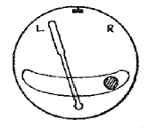
- 좌선회 내활
- 좌선회 외활
- 우선회 내활
- 우선회 외활
(정답률: 78%)
68. 유압계통에서 사용되는 압력조절기에 대한 설명으로 가장 거리가 먼 것은?
- 압력조절기에서는 평형식(Balanced type)과 선택식(Selective type)이 있다.
- kick-in 압력과 kick-out 압력의 차를 작동범위라 한다.
- kick-out 상태는 계통의 압력이 규정값보다 낮을 때의 상태이다.
- kick-in 상태에서는 귀환관에 연결된 바이패스밸브가 닫히고 체크밸브가 열리는 과정이다.
(정답률: 67%)
69. 온도의 증가에 따라 저항이 감소하는 성질을 갖고 있는 온도계의 재료는?
- 망간
- 크로멜-알루멜
- 서미스터(Thermistor)
- 서모커플(Thermocouple)
(정답률: 67%)
70. 교류회로에서 피상전력이 1000VA 이고 유효전력이 600W, 무효전력은 800VAR 일 때 역률은 얼마인가?
- 0.4
- 0.5
- 0.6
- 0.7
(정답률: 61%)
71. 4극짜리 발전기가 1800rpm 으로 회전할 때 주파수는 몇 Hz 인가?
- 60
- 120
- 180
- 360
(정답률: 52%)
72. 편차(Variation)에 대한 설명으로 틀린 것은?
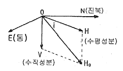
- 그림에서 편차는
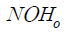
이다. - 편차의 값은 지표면상의 각 지점마다 다르다.
- 편차는 자기 자오선과 지구 자오선사이의 오차각이다.
- 편차가 생기는 원인은 지구의 자북과 지리상의 북극이 일치하지 않기 때문이다.
(정답률: 70%)
73. 일반적으로 항공기내에 비치되는 비상 장비가 아닌 것은?
- 구명 조끼
- GTC
- 구명 보트
- 탈출용 미끄럼대
(정답률: 85%)
74. 자기 컴파스가 위도에 따라 기울어지는 현상은 무엇 때문인가?
- 지자기의 복각
- 지자기의 편각
- 지자기의 수평분력
- 컴파스 자체의 북선오차
(정답률: 59%)
75. 다음 중 Autoland system 의 종류가 아닌 것은?
- Dual system
- Triplex system
- Dual-Dual system
- Single-Pole system
(정답률: 56%)
76. 직류발전기의 계자 플래싱(Field flashing)이란 무엇 인가?
- 계자코일에 배터리로부터 역전류를 가하는 행위
- 계자코일에 발전기로부터 역전류를 가하는 행위
- 계자코일에 배터리로부터 정방향의 전류를 가하는 행위
- 계자코일에 발전기로부터 정방향의 전류를 가하는 행위
(정답률: 54%)
77. 방빙(Anti-Icing)장치가 되어있지 않은 것은?
- 기관의 앞 카울링
- 동체 리딩 에지
- 꼬리날개 리딩 에지
- 주 날개 리딩 에지
(정답률: 54%)
78. 유압계통의 Pressure Surge를 완화하는 역할을 하는 장치는?
- Relief valve
- Pump
- Accmulator
- Reservoir
(정답률: 69%)
79. 대형 항공기에서 사용하는 교류 전력 방식으로 옳은 것은?
- 3상 Δ 결선 방식이다.
- 3상 Y 결선 방식이다.
- 3상 Y - Δ 결선 방식이다.
- 3상 2선식 Y 결선 방식이다.
(정답률: 63%)
80. 조종사가 고도계의 보정(Setting)을 QNH 방식으로 보정하기 위하여 고도계의 기압 눈금판을 관제탑에서 불러주는 해면기압으로 맞춰 놓았을 경우 그 고도계가 나타내는 고도는?
- 압력고도
- 진고도
- 절대고도
- 밀도고도
(정답률: 62%)
음파의 전파 속도는 공기의 밀도와 온도에 따라 결정되는데, 밀도와 온도는 비례 관계이기 때문에 ""에서 밀도와 온도가 곱해지는 것이 맞다. 다른 보기들은 모두 올바른 식이다.